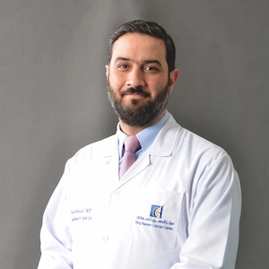
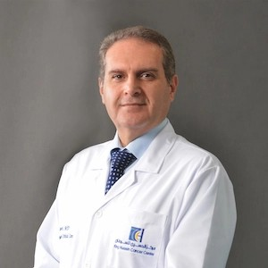
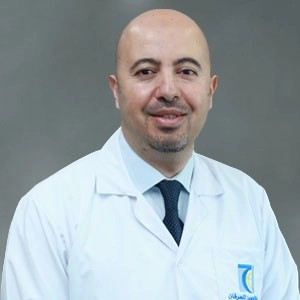
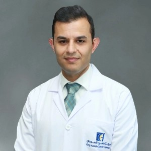
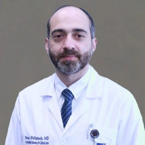
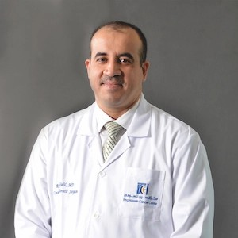
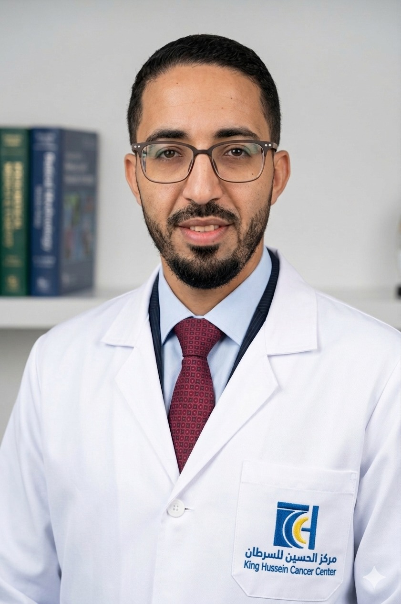
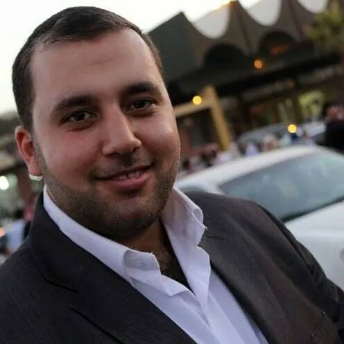

Meet the dedicated clinician-educators and talented trainees who make the KHCC Pulmonary Fellowship one of the most respected programs in the region.
Our faculty are board-certified pulmonologists and critical care specialists with deep clinical expertise and a genuine passion for teaching and mentorship.






Our current cohort of fellows brings diverse backgrounds and clinical experiences, united by a shared commitment to excellence in respiratory medicine.


The program accommodates 6 fellows across 3 year cohorts (F1–F6). Fellows F1 & F2 are in Year 1, F3 & F4 in Year 2, and F5 & F6 in Year 3. This structure ensures that at least one first-year fellow is always on Pulmonary Service alongside a senior fellow, maintaining continuity of service and mentorship.